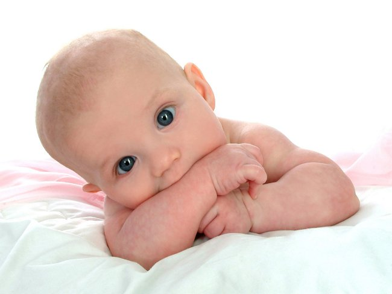

В 4 месяца большинство детей умеют переворачиваться и все сильнее интересуются окружающим миром: их зрение приобретает "взрослое" качество, а ручки способны схватить игрушку.
Движения у 4-месячного ребенка становятся более стабильными, у него постепенно исчезает поза напряженной шеи и голова удерживается по средней линии. Он тянет руки к игрушкам, ощупывает предметы, поворачивается со спины на бок и на живот, подолгу гулит.
Ребенок в 4 месяца различает основные спектральные цвета и музыкальные звуки, разница между которыми 4-5 тонов.